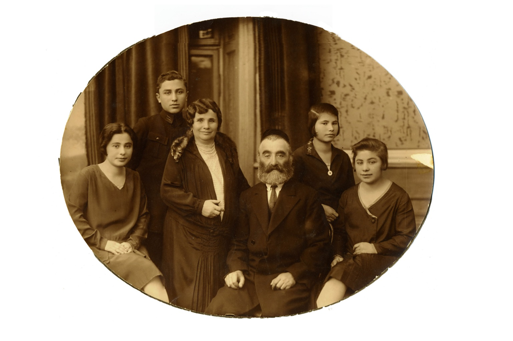

Our Story
“May God give you of the Dew of Heaven and the Fatness of the Earth...”
At The Jerusalem Signet, we don’t just create art; we reclaim history. Every frame that leaves our studio in the Holy Land is a bridge between the ancient promises of the Bible and the homes of those who cherish them today.
The founder of our studio, Tal Jacob Shainfeld, carries a name that bridges generations and seasons. He was born during the season of Passover—the exact time when the Land of Israel transitions from the rain to the season of Tal (Dew).
In our tradition, dew is a symbol of gentle, constant grace. It falls silently through the night to nourish the earth, representing renewal and the quiet favor of the Creator. This is the spirit we bring to our work: a steady, peaceful blessing for your home.
"May God give you of the dew of heaven and the fatness of the earth, and plenty of grain and wine."
Genesis 27:28
This timeless blessing, given by Isaac to his son Jacob, resonates deeply within our studio. Tal’s middle name, Jacob, was given in honor of his great-grandfather, weaving the ancient biblical promise directly into the living history of our family.
Tal’s story is inextricably linked to the miraculous resurrection of the Jewish people in their ancestral homeland. His grandparents arrived in Israel as young pioneers from Russia and Poland, driven by the hope of rebuilding Zion.

"The Kofman family in Poland. My grandmother, Zipora, is standing, and her sister Rachel is sitting, captured just before they made 'Aliya' in 1934. A legacy that was never silenced."
However, this hope was born from profound loss. On his mother’s side, an entire world was extinguished. His grandmother’s parents—her father Izekel Kofman and her mother Ester (née Hagel)—were murdered in the Holocaust.
The tragedy claimed her other siblings as well: her sister Hana, who was murdered alongside her husband, Avraham Gelbox, and their young daughter whose name remains unknown to us; and her brother Shmuel, who was also murdered.
Despite the darkness of the past, Tal’s childhood was filled with light and tradition. He vividly remembers the feel of his grandfather’s hands resting on his head every Friday night, reciting the blessing Jacob gave to his grandsons: “May God make you like Ephraim and like Manasseh” (Genesis 48:20).
To a grandfather who survived the horrors of Europe to see his grandson growing up free in Jerusalem, this wasn't just a prayer—it was a victory. Today, through The Jerusalem Signet, Tal shares that same victory and blessing with you.
Authentic Galilee Olive Wood, known for its strength and stunning grain, symbolizing deep roots.
Inscribed by certified Hebrew Scribes (Sofer Stam) following ancient laws of sanctity.
The Royal Velvet: The deep royal blue velvet that cradles our texts is inspired by the Parochet—the sacred curtain that protects the Holy Ark in the synagogue.
We invite you to bring a piece of Jerusalem into your home. Whether it is the protection of the Priestly Blessing or the prophetic hope of "swords into plowshares," you are receiving more than a gift. You are becoming part of a story that began thousands of years ago and continues through us, together.
"The LORD bless you and protect you." (Numbers 6:24)